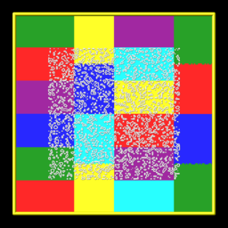
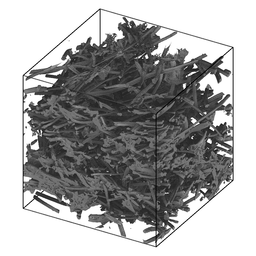

read_isurf command
Syntax:
read_isurf group-ID Nx Ny Nz filename thresh ablateID keyword args ...
group-ID = group ID for which grid cells to perform calculation on
Nx,Ny,Nz = grid cell extent for adding implicit surfs
filename = binary file with grid corner point values
thresh = threshold for surface definition, value > 0.0 and < 255.0
ablateID = ID of a fix ablate command
zero or more keyword/args pairs may be appended
keyword = group or type or push or precision or read
group arg = group-ID group-ID = new or existing surface group to assign the surface elements to type arg = tfile tfile = binary file with per grid cell surface type values push arg = yes or no = whether to push corner point values to 0/255 precision arg = int or double read arg = serial or parallel
Examples:
read_isurf portion 100 100 1 isurf.material.2d 180.5 fablate group mesh
read_isurf subset 150 100 50 isurf.materials.3d 120.5 fablate type isurf.type
read_isurf subset 150 100 50 isurf.materials.3d 120.5 fablate read parallel
Description:
Read the geometry of a surface from the specified file. In SPARTA, a "surface" is a collection of surface elements that represent the surface of one or more physical objects which will be embedded in the global simulation box. Surfaces can be explicit or implicit.
This command reads implicit surfaces from a file containing grid corner point values which implicitly define the surface elements. See the read_surf command to read explicit surfaces from a different kind of file. See the Howto 6.13 section of the manual for an explantion of explicit versus implicit surfaces as well as distributed versus non-distributed storage. You cannot mix explicit and implicit surfaces in the same simulation.
Surface elements are triangles in 3d or line segments in 2d. Surface elements for each physical object are required to be a complete, connected set that tile the entire surface of the object. See the discussion of watertight surfaces below. Implicit surfaces will always be watertight, due to the algorithm that defines them.
Here are simulation snapshots of 2d and 3d implicit surface models through which particles could flow. Click on either image for a larger image. In the 2d case, the colorings are by processor for sub-domains each owns. The implicit triangles for the 3d case were created via Marching Cubes (discussed below) from a tomographic image of a sample of NASA FiberForm (TM) material, used as a heat shield material on spacecraft.




Particles collide with surface elements as they advect. Each surface element is assigned to a collision model, specified by the surf_collide command which affects how a particle bounces off the surface. Each surface element can optionally be assigned to a reaction model, specified by the surf_react command which determines if any surface chemistry occurs during a collision. Statistics for each surface element due to their interactions with particles can be tallied via the compute isurf/grid command, time-averaged via the fix ave/grid command, and ouput via the dump surface command.
Surface elememts can be assigned to surface groups via the group surf command. Surface group IDs are used by other commands to operate on selected sets of elements. This command has a type keyword which can be used to help assign different elements to different groups.
Note that at some point, it will be possible to use the read_isurf command multiple times to read surfaces from multiple files and add them to the simulation domain, so long as the grid extent of the different commands does not overlap. However currently, that is not yet possible.
The format of a surface file for implicit surfaces is discussed below.
The tools directory contains a implicit_grid.py tool which can create implicit surface files in a randomized manner for different grid extents.
The specified group-ID must be the name of a grid cell group, as defined by the group grid command, which contains a set of grid cells, all of which are the same size, and which comprise a contiguous 3d array, with specified extent Nx by Ny by Nz. For 2d simulations, Nz must be specified as 1, and the group must comprise a 2d array of cells that is Nx by Ny. These are the grid cells in which implicit surfaces will be created.
The specified filename is for a binary file in the following format:
first 4 bytes = Nxfile (integer)
next 4 bytes = Nyfile (integer)
next 4 bytes = Nzfile (integer), only for 3d simulations
final N bytes = Nxfile by Nyfile by Nzfile grid corner point values (integer)
For 2d simulations, the first 8 bytes store 2 integers in binary format: Nxfile and Nyfile. For 3d simulations, the first 12 bytes store 3 integers in binary format: Nxfile, Nyfile, and Nzfile. These are the dimensions of the grid of corner point values in the remainder of the file.
IMPORTANT NOTE: The Nxfile, Nyfile, Nzfile values are for a 2d or 3d grid of corner points, which overlay the Nx by Ny by Nz grid of cells. In each dimension there is one more corner point than cells. Thus Nxfile = Nx+1, Nyfile = Ny+1, Nzfile = Nz+1 is required. SPARTA will give an error if the read_isurf Nx,Ny,Nz arguments do not match the first 2 or 3 integers in the file.
The remaining N bytes of the file are a series of corner point values. There are N = Nxfile * Nyfile values in 2d, and N = Nxfile * Nyfile * Nzfile values in 3d.
If the precision keyword is set to int, which is the default, then the values are one-byte integers, from 0 to 255 inclusive. If the precision keyword is set to double, then they are double-precision floating point values, from 0.0 to 255.0 inclusive. The one-byte integer format is what is typically used for tomographic images. The double-precision format is what is written by the write_isurf command. The latter is typically used when running an ablation model via the fix ablate command, where material is removed incrementally (from the corner point values) due to collisions of particles with the implicit surfaces.
IMPORTANT NOTE: The corner point values are a 2d or 3d regular array which must be ordered as follows. The x indices (1 to Nxfile) vary fastest, then the y indices (1 to Nyfile), and the z indices slowest (1 to Nzfile). These will be assigned as corner points to each child grid cell in the Nx by Ny by Nz simulation domain. For mapping corner points to grid cells, the ordering of the regular array of grid cells in the simulation domain is the same: their x indices vary fastest, then y, and their z indices very slowest.
The 8 corner point values (4 in 2d) for each grid cell are used with a marching cubes algorithm (marching squares in 2d) to infer a set of triangles (line segments in 2d) which are created in the grid cell.
IMPORTANT NOTE: All triangles (line segments in 2d) created within the same grid cell are assigned the same surface ID, which is the grid cell ID.
A good description of the two algorithms is given on these Wikipedia webpages:
The algorithms require a threshold value as input, which is the thresh value in the read_isurf command. For corner point values that bracket the threshold, it determines precisely where in the grid cell the corner points of the inferred implicit surface elements will be.
The threshold must be specified as a floating point value such that 0 < thresh < 255. An integer value for thresh (e.g. 128 or 128.0) is not allowed, because that could induce generation of implicit surfaces with zero length (2d line) or area (3d triangle).
IMPORTANT NOTE: The aggregate set of implicit surfaces created by this procedure must represent a watertight object(s), the same as explained for the read_surf command, otherwise SPARTA will generate an error. The marching cube and square algorithms guarantee this. However, if the Nx by Ny by Nz array of grid cells is interior to the simulation box, the entire outer boundary of the Nx+1 by Ny+1 by Nz+1 grid of corner points should have values = 0. This will insure no surface element touches the outer boundary (which would induce a non-watertight surface). If the array of grid cells touches a simulation box face, then this is not a requirement (the same as if a set of explicit surfs were clipped at the box boundary). However, if a boundary is periodic in a particular dimension and the array of grid cells touches that boundary, then you must insure the Nx+1 by Ny+1 by Nz+1 grid of corner points spans that entire dimension, and its values are periodic in the same sense the simulation box is. E.g. if the y dimension is periodic, then the corner point values at the y = 1 and y = Ny+1 lines or planes of the 2d or 3d corner point array must be identical for each x and z coordinate. Otherwise the aggregate set of induced implicit surfaces will not be consistent across the y periodic boundary.
For an axisymmetric domain (see the dimension and boundary commands), the y = 0 face of the box is the symmetry axis. A body of revolution legitimately closes on itself there, so if the array of grid cells starts on the axis, corner point values on that y = 0 boundary are allowed to be non-zero. The resulting surface end points lie on the box boundary, which the watertight check permits. If the array of grid cells starts above the axis, the usual requirement that the outer boundary corner point values be 0 still applies.
The specified ablateID is the fix ID of a fix ablate command which has been previously specified in the input script. It will store the grid corner point values for each grid cell. It also has the code logic for converting grid corner point values to surface elements (line segments or triangles) and also optinally allows for the surface to be ablated during a simulation due to particles colliding with the surface elements.
The following optional keywords affect attributes of the read-in surface elements and how they are read.
Surface groups are collections of surface elements. Each surface element belongs to one or more surface groups; all elements belong to the "all" group, which is created by default. Surface group IDs are used by other commands to identify a group of suface elements to operate on. See the group surf command for more details.
Every surface element also stores a type which is a positive integer. Type values are useful for flagging subsets of elements. For example, implicit surface elemnts in different regions of the simulation box. Surface element types can be used to define surface groups. See the group surf command for details.
The group keyword specifies an extra surface group-ID to which all the implicit surface elements are assigned when created by the read-in corner points. All the created implicit elements are also assigned to the "all" group and to group-ID. If group-ID does not exist, a new surface group is created. If it does exist the create implicit surface elements are added to that group.
The type keyword triggers the reading of a per grid cell type file with the specified name tfile.
The specified filename is for a binary file in the following format:
first 4 bytes = Nxfile (integer)
next 4 bytes = Nyfile (integer)
next 4 bytes = Nzfile (integer), only for 3d simulations
final N bytes = Nxfile by Nyfile by Nzfile grid corner point values (integer)
For 2d simulations, the first 8 bytes store 2 integers in binary format: Nxfile and Nyfile. For 3d simulations, the first 12 bytes store 3 integers in binary format: Nxfile, Nyfile, and Nzfile. These are the dimensions of the grid of corner point values in the remainder of the file.
IMPORTANT NOTE: The Nxfile, Nyfile, Nzfile values are for a 2d or 3d grid of per-cell values, which overlay the Nx by Ny by Nz grid of cells. Thus Nxfile = Nx, Nyfile = Ny, Nzfile = Nz is required. SPARTA will give an error if the read_isurf Nx,Ny,Nz arguments do not match the first 2 or 3 integers in the file.
The remaining N bytes of the file are a series of one-byte integer values. There are N = Nxfile * Nyfile values in 2d, and N = Nxfile * Nyfile * Nzfile values in 3d. Each value is a single byte integer from 1 to 255 inclusive, since surface element type values must be > 0.
IMPORTANT NOTE: The corner point values are a 2d or 3d regular array which must be ordered as follows. The x indices (1 to Nxfile) vary fastest, then the y indices (1 to Nyfile), and the z indices slowest (1 to Nzfile). These will be assigned to each grid cell in the Nx by Ny by Nz simulation domain. For mapping type values to grid cells, the ordering of the regular array of grid cells in the simulation domain is the same: their x indices vary fastest, then y, and their z indices very slowest.
The type value for each grid cell is used to assign a type value to each surface element created in that grid cell by the marching cubes or squares algorithm.
The push keyword specifies whether or not (yes or no) to "push" grid corner points values to their minimum/maximum possible values, i.e. 0 or 255 respectively. Each corner point value which is below (above) the specified thresh value is and is also entirely surrounded by neighbor corner point values which are also below (above) the thresh value is reset to 0 (255). In 2d, there are 8 corner points surrouding each interior corner point, i.e. all corner points on the face of the 2x2 set of grid cells which surround the interior point. In 3d, there are 26 corner points surrouding each interior corner point, i.e. all corner points on the face of the 2x2x2 set of grid cells which surround the interior point. The purpose of this operation is to reset corner point values to 0 if they are fully exterior to the surface object(s), and likewise to 255 if they are fully interior to the surface object(s).
Note that the push is a one-time operation, performed when the corner point values are read in, before the first set of surface elements are created by the marching cubes or marching squares algorithms.
The default for the push keyword is yes.
Note that push yes re-normalizes the corner point values as they are read, snapping fully interior/exterior corners to 0 or 255. This is appropriate for a freshly generated geometry file, but it means a read_isurf is not an exact inverse of a write_isurf. When you use the write_isurf then read_isurf sequence to save and restore a partially ablated (mid-run) surface state, as described on the write_isurf doc page, use push no so the corner point values are restored exactly as written. Also use precision double in that case (see below), so partially decremented corner point values are not truncated to integers.
The read keyword specifies how the input file of grid corner point values is read. If the value is serial, which is the default, then only a single proc reads the file, a chunk of values at at time. They are broadcast to other processors, and each scans them for corner point values that correspond to grid cells it owns. If the value is parallel, then each proc opens the input file and reads a N/P portion of the corner point values, where N is the # of corner point values, and P is the # of procs. Additional communication is then performed to communicate the corner point values where they are needed by each grid cell that owns one of the corner point values. The parallel option can be faster for simulations with large grid corner point files and large numbers of processors.
Restrictions:
This command can only be used after the simulation box is defined by the create_box command, and after a grid has been created by the create_grid command. If particles already exist in the simulation, you must insure particles do not end up inside the set of implicit surfaces.
Simulations with implicit surfaces cannot perform grid adaptation.
Related commands:
read_surf, write_surf, fix ablate
Default:
The optional keyword defaults are group = all, type = no, push = yes, precision int, and read serial.